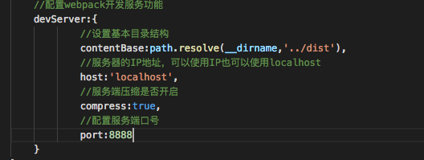

npm init npm install webpack webpack-cli webpack-dev-server --save-dev
创建目录如下
webpack4 中默认找 src/index.js 作为 默认入口，可以直接在终端中输入命令webpack 将当前的内容 进行一个简单的打包
这时，打包的时候终端中会出现 黄色的警告提示
mode 是 webpack 独有的，有两种打包环境，
development: 开发环境
production: 生产环境
打包的时候 输入 webpack --mode=development
或者 webpack --mode=production (代码压缩过的，打包后小了很多) 就不会出现警告了。
在 config 文件夹里 创建webpack.config.js
webpack.config.js分为6个模块
mode 打包模式
entry 入口文件的配置项
output 出口文件的配置项
module 模块：解读css，图片，es转换
plugins 插件：用于生产模板 和 各项插件
devServer 配置 webpack 开发服务功能
写好 配置模块后，在package.json里 创建命令：( "build":"webpack --config=config/webapck.config.js" )
最简单的 devServer配置项只有4个
contentBase设置基本目录结构
host服务器的IP地址，可以使用IP 也可以使用 localhost
compress服务器压缩是否开启
port配置服务器端口

之后要在 package.json里配置下
"server":"webpack-dev-server --config=config/webpack.js"
loaders可以把 SASS文件转换成css， 也可以把 es6 es7 转换成 浏览器可以解析的 js
例子： 我们想要打包css 需要下载 npm install style-loader css-loader --save-dev
然后到 webpack.dev.js进行配置
uglifyjs-webpack-plugin
我们上线前都会对代码进行压缩，很多都是通过插件方式实现的。
npm install uglify --save-dev
在 webpack.config.js里 进入
const uglify = require('uglifyjs-webpack-plugin');，
并在
plugins里
new uglify()
html-webpack-plugin
现在，我们进行打包时，需要手动修改index.html 进行打包
为了解决这个问题我们要引入 html-webpack-plugin
npm install html-webpack-plugin --save-dev这时，再到 webpack.config.js的plugins里进行配置
详见 webpack.dev.js plugins 里的 配置
我们缺少 loader的解析，现在需要下载两个 解析图片的 loader，file-loader/url-loader
file-loader
解决引用路径的问题,拿 background样式用 url引入背景图来说，我们都知道，webpack最终会将各个模块打包成一个文件，
因此我们样式中的url路径是相对入口 html文件的，而不是相对于原始css文件所在的目录。
file-loader可以解析项目中的url 引入，根据我们的配置，将图片拷贝到相应的路径，修改打包后文件引入路径，并指向正确路径
url-loader 如果图片较多，会发很多http请求，会降低页面性能，这个问题可以通过 url-loader解决。 url-loader会将引入的图片编码，生成 dataURL，相当于把图片数据翻译成一串字符，再把这串字符打包到文件中。 最终只需要引入这个文件就能访问图片了。当然如果图片较大，编码会消耗性能，因此 url-loader提供了 一个limit参数， 小于limit字节的文件会被转换成 dataURL,大于limit的还会使用 file-loader 进行复制。
详见 webpack.dev.js plugins 里的 配置
作用是将css文件从html文件中分离出来
详见 webpack.dev.js plugins 里的 配置
处理html中的图片
npm install html-withimg-loader --save-dev
在 webpack.dev.js里配置loader
postcss-loader autoprefixer
npm install --save-dev postcss-loader autoprefixer
在根目录下创建 postcss.config.css并在 处理css时，使用 postcss-loader
npm install --save-dev babel-loader babel-core
添加 loader
bebel-preset-env 虽然已经配置好了Babel，但并没有真正生效，在项目的根目录中 创建一个 .babelrc文件并启用一些插件
npm install --save-dev babel-preset-env { "presets": ["env"]}
npm install --save-dev clean-webpack-plugin
const CleanWebpackPlugin = require('clean-webpack-plugin');
+ new CleanWebpackPlugin(['dist']),
将编译后的代码映射回原始源代码, 可以更容易的看到错误和警告
开发环境和生产环境的构件目标差异很大
开发环境中我们需要强大的， 具有实时重载或热模块替换能力的 source map 和 localhost server
生产环境中，我们的目标则转向于关注更小的 bundle，更轻量的 source map